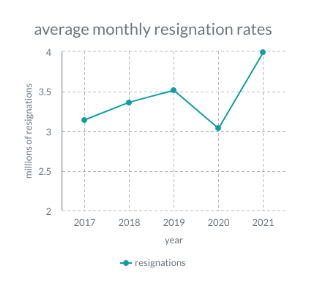
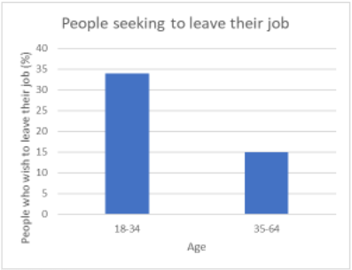

The Great Resignation
The effect of resignations on the 2021 job market
A New Jersey food processing plant manager says economic instability has led to employee shortages and high rates of employee resignations.
Rebecca Zamsky is the manager of a food processing facility which supplies stores around New Jersey. She said that her company experienced a high rate of resignations throughout 2021. “It’s becoming more difficult to find and retain enough workers to continue operating at our normal rate,” Zamsky said.

Zamsky’s experience is not unique. The US bureau of labor statistics has reported a monthly average of nearly 4 million employees quitting per month in 2021, the highest rate in more than twenty years. Some economists have begun to refer to this as, “The Great Resignation.”
Zamsky also said her company spent more on wages this year. “Nobody can afford to work at the old rates anymore.” Zamsky said, “prices everywhere are up.”
“It’s really tough staying in business right now,” Zamsky said, “It feels like there’s a new problem each week. I’m worried that we might be forced to shut down soon if something doesn’t change fast.”
Jyn Whitehurst is a grocery store owner. He also says he has been forced to increase salaries due to increased prices. “Last month, Michelle asked me for a raise,” Whitehurst said, “she told me she was spending too much on gas just to get here.”
Whitehurst said that higher employee salaries was one of several reasons he needed to raise the prices of his goods. “I just wish people knew this wasn’t our fault.” Whitehurst said, “We aren’t trying to be greedy; we’re only doing what we need to do to avoid going out of business. I hope people can understand we aren’t doing this to spite them, if we could avoid raising our prices, we would.”
Issues in labor recruitment and retention can be seen throughout the market. Pierce Malloy is a recruiter for a local employment agency. Malloy says he has observed a change in the labor market over the past year. “Many of the candidates with whom we have worked over the past year have been seeking more flexible work schedules and higher salaries,” Malloy said.
The mass resignations have had some interesting effects. “We have seen an increase in the number of candidates who have applied through us, though this is overshadowed by the increase in openings that have been created,” Malloy said.

The rate at which resignations are occurring are not always constant. A survey conducted by The Harris Poll has found younger employees planned to resign within the next 12 months at nearly double the rate of older employees. The poll has also found that employees resigned for a variety of reasons, though the most common reasons were working conditions, burn out, and a desire for higher pay.